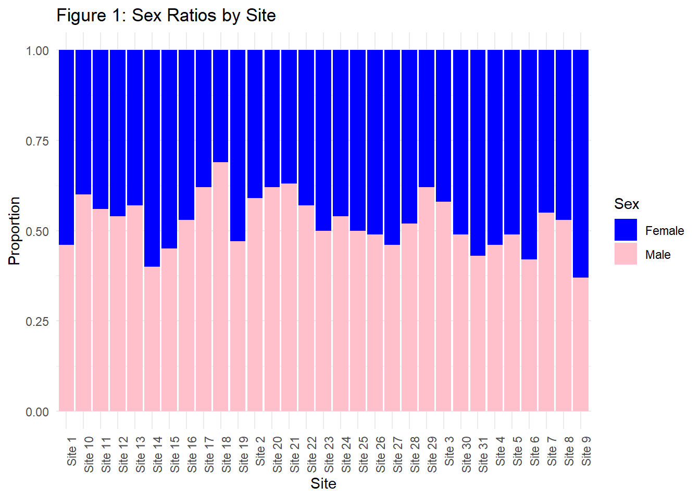

Analyzing Sex Ratio Variation in Araptus attenuatus: Statistical and Spatial Approaches
Methods
To determine the extent to which changing climate may have impacted sex ratio divergence among locations in the Sonora Desert bark beetle, Araptus attenuatus, multiple statistical analyses were performed. We analyzed data collected from 100 beetles sampled across 31 sites. At each site, beetles were randomly sampled from several plants, with each plant serving as a replicate within the site. The sex of each beetle was recorded as either male or female, along with phenotype data.
To test for differences in sex ratios among sites, we first summarized the data by calculating the number of males and the total number of beetles sampled at each site. A contingency table was then constructed to capture the counts of males and females across all sites. A Pearson’s Chi-squared test was applied to this contingency table to assess whether the observed sex ratios differed significantly among sites.
To identify which sites have sex ratios that deviate significantly from an equal proportion of males and females (50:50), we conducted a series of binomial tests. For each site, we tested whether the observed number of males significantly differed from the expected number under the assumption of equal proportions. Binomial tests were performed using the total number of beetles sampled at each site and the observed count of males. The resulting p-values from these tests were used to determine significance, with p < 0.05 indicating a site where the sex ratio significantly deviated from equality.
To investigate the relationship between habitat suitability and the male-to-female sex ratio of beetles at the sampling locations, we utilized raster habitat suitability data, sampling location coordinates, and sex ratio estimates aggregated to a single value per site. Habitat suitability measurements were derived from a raster dataset with a spatial resolution of 1 km², while sex ratios were calculated from raw data as the male-to-female ratio for each site. The habitat suitability raster was re-projected to the EPSG:4326 coordinate system to align with the spatial reference system of the sampling locations. Sampling locations, containing latitude and longitude information, were overlaid onto the habitat suitability raster, and suitability values corresponding to each site were extracted using site coordinates.
To assess the functional relationship, exploratory data analysis was first conducted by examining histograms of habitat suitability and male-to-female sex ratios to evaluate the normality of the distributions. A Pearson correlation test was then performed to quantify the strength and direction of the relationship between habitat suitability and sex ratio. Additionally, a linear regression model was fitted to predict the male-to-female ratio using habitat suitability as the explanatory variable. The model’s slope, intercept, R2, and p-value were recorded. Finally, a scatterplot was created to visualize the relationship between habitat suitability and the male-to-female ratio, with a fitted regression line and annotated model parameters.
To investigate whether the inclusion of Phenotype A and Phenotype B improves the functional relationship between habitat suitability and the male-to-female sex ratio, we expanded our analysis to include these additional predictors. First, we aggregated the raw beetle dataset by site, calculating the average values of Phenotype A and Phenotype B for each site. These averages were then combined with the previously calculated male-to-female ratio and habitat suitability values for each site to form a unified dataset.
Histograms of the average Phenotype A and Phenotype B values were examined to evaluate the normality of these predictors. Using this dataset, we constructed multiple linear regression models with habitat suitability as the dependent variable and different combinations of the three predictors—male-to-female ratio, average Phenotype A, and average Phenotype B—as independent variables.
To identify the best-fitting model, we assessed all possible combinations of predictors, ranging from single-variable models to a full model including all three predictors and their additive effects. For each model, we calculated the Akaike Information Criterion (AIC) and the coefficient of determination R2 as metrics for model performance. Lower AIC values indicated better model fit, while higher R2 values indicated greater explanatory power.
To investigate whether habitat suitability has changed at sampling locations between the last glacial maximum (~20,000 years ago) and the present day, we used two raster datasets representing habitat suitability for the two time periods. Suitability values were extracted from each raster at the sampling locations, and the differences in suitability values between the present day and the glacial maximum were calculated once normality was checked for each dataset.
A paired t-test was conducted to determine whether the mean difference in suitability values between the two time periods was significantly different from zero. The null hypothesis stated that there was no difference in habitat suitability between the present day and the last glacial maximum, while the alternative hypothesis stated that the mean difference was not equal to zero.
To investigate changes in male-to-female ratios (MF ratios) across the landscape, we used a model derived from the relationship between current habitat suitability and MF ratio. This model was applied to historical habitat suitability estimates from the Last Glacial Maximum raster and to present-day habitat suitability to predict sex ratios for both time periods at each sampling location. The difference between the two estimates (MFdifference = PresEstimate − MFestimate) was calculated to identify trends potentially driven by climatic changes over time.
To visualize these patterns, we mapped the spatial distribution of the predicted differences (MFdifference) using a color-coded scale. A custom color palette ranging from red (higher historical MF ratios) to green (higher present-day MF ratios) was created, with a neutral color (centered at zero difference) representing equal MF ratios. Predicted values were binned into 100 levels, with each bin assigned a corresponding color. These visualizations were overlaid on the present habitat suitability raster to contextualize the patterns of sex ratio shifts across the landscape. A second visualization was use to view the extent of predicted historical sex ratios. Symbol size on the map represented the magnitude of the predicted historical sex ratios.
Results
The Chi-squared test revealed a significant difference in sex ratios among the sampled sites. With a X2 value of 68.38, 30 degrees of freedom, and a p-value of 7.968e-05. This result indicates that the proportions of males and females were not consistent across the sampled sites. Instead, this shows that there are variations in sex ratios among the populations. Visualization of this can be seen in Figure 1 which shows the proportions of male and female beetles at each site.
Six sites exhibited significant deviations from equal male-to-female proportions (mfratio=1), as indicated by their p-values (Table 1). Site 18 had the highest male-to-female ratio (mfratio=2.2258, p=0.0002), while Site 9 was the only site with a female-biased ratio (mfratio=0.5873, p=0.0120). Sites 17, 20, and 29 all displayed an mfratio=1.6316 with p=0.0210, and Site 21 exhibited a ratio of 1.7027 (p=0.0120). These results suggest a heterogeneous distribution of sex ratio imbalances across locations, with certain sites displaying pronounced male or female biases.
| Site | Males | Total | Males_Prop | Females_Prop | mfratio | p_value | |
|---|---|---|---|---|---|---|---|
| 9 | Site 17 | 62 | 100 | 0.62 | 0.38 | 1.6316 | 0.0209787 |
| 10 | Site 18 | 69 | 100 | 0.69 | 0.31 | 2.2258 | 0.0001831 |
| 13 | Site 20 | 62 | 100 | 0.62 | 0.38 | 1.6316 | 0.0209787 |
| 14 | Site 21 | 63 | 100 | 0.63 | 0.37 | 1.7027 | 0.0120330 |
| 22 | Site 29 | 62 | 100 | 0.62 | 0.38 | 1.6316 | 0.0209787 |
| 31 | Site 9 | 37 | 100 | 0.37 | 0.63 | 0.5873 | 0.0120330 |
The data was determined to be normal based on visual analysis of histogram plots (Figures 7-12 in Appendix). Distribution of MF ratios based on locations are plotted in Figure 2 below.
The primary correlation analysis revealed a significant negative correlation between habitat suitability and the male-to-female sex ratio (r2=−0.169, p=0.0215). This suggests that as habitat suitability increases, the male-to-female ratio decreases. The linear regression model further supported this relationship, with the equation: Male-Female Ratio = -0.73 * Habitat Suitability + 1.47
The regression model explained 16.9% of the variation in sex ratio. Figure 3 displays the data points, with habitat suitability on the x-axis and male-female ratio on the y-axis, along with a fitted regression line in red. The equation of the regression line, the coefficient of determination, and the p-value were annotated on the plot. The data indicated a clear trend, where sites in areas of higher habitat suitability exhibited lower male-female ratios.
To compare the functionality of different models with habitat suitability, the data were first assessed for normality via histograms (Figures 7-12 in Appendix). The results of the multiple regression model comparison are summarized in Table 2 below, which displays the AIC and R2 values for each combination of predictors. The single-variable model with the male-to-female ratio had the lowest AIC (-10.60) among all single-predictor models and an R2 of 0.169, indicating a modest explanatory power. The addition of Phenotype A or Phenotype B to the model increased R2 but at the cost of higher AIC values when these predictors were used independently.
The best-performing model, based on the lowest AIC value (-10.6), was the model that included only male-to-female ratio. This indicates that the inclusion of Phenotypes A and B do not improve the functional relationship over habitat suitability either on their own or in any combination.
| AIC | R2 | |
|---|---|---|
| mfratio | -10.602889 | 0.1691480 |
| Avg_PhenotypeA | -4.901224 | 0.0013780 |
| Avg_PhenotypeB | -5.185298 | 0.0104872 |
| mfratio_Avg_PhenotypeA | -8.773598 | 0.1737107 |
| mfratio_Avg_PhenotypeB | -9.897566 | 0.2031329 |
| Avg_PhenotypeA_Avg_PhenotypeB | -3.219780 | 0.0115873 |
| mfratio_Avg_PhenotypeA_Avg_PhenotypeB | -8.051844 | 0.2070888 |
Suitability values were successfully extracted for 31 sampling locations from both the present-day and last glacial maxiumum raster datasets. A paired t-test yielded a t-statistic of −1.9272 with 30 degrees of freedom and a p-value of 0.06347. The mean difference in suitability was −0.040, with a 95% confidence interval of −0.082,0.002.
The results indicate that the difference in habitat suitability between the present day and the last glacial maximum was not statistically significant at the α=0.05 level. However, the mean difference suggests a slight trend toward lower suitability in the present day compared to the last glacial maximum. Figure 4 shows a scatterplot comparing suitability between the two periods. Points above the dashed 1:1 line indicate areas where present-day suitability is higher than during the last glacial maximum, and points below the line indicate the opposite.
The analysis comparing habitat suitability during the Last Glacial Maximum and present-day conditions revealed notable patterns in male-female (MF) ratio estimates across sites. Table 3 (Appendix) summarizes the predicted present and glacial habitat suitability alongside the respective MF estimates for each site. The suitability and MF estimates exhibit variability across the landscape, with some sites experiencing higher suitability during glacial periods and others showing increased suitability in present conditions. These findings suggest that shifts in climate likely played a role in driving habitat suitability changes and influenced associated sex ratio distributions at some sites while leaving others relatively unaffected.
Figures 5 and 6 display a comparison of MF ratio estimates according to each site location. Figure 5 is plotted over the present habitat suitability data and the size circle on at each site indicates the relative proportions of males to females in our glacial estimates. This figure visualizes how some larger historical estimates for MF ratio do not match up with present habitat suitability. This indicates a change over time. Figure 6 shows if each site had a historical MF estimate that is higher or lower than the present Findings. This figure shows that the majority of sites, particularly in the northern portion of the area, have seen a reduction in MF ratio since the last glacial maximum.
The observed trends highlight the potential influence of past climatic shifts on species distributions and demographic patterns. Sites with minimal differences between glacial and present MF estimates may represent areas of relative climatic stability, whereas sites with larger discrepancies may reflect the sensitivity of habitat suitability to climate variations. Such patterns underline the importance of climate in shaping ecological and population dynamics, offering insights into how future climatic changes might further impact habitat and demographic structures.
Appendix

| Site | Present Suitability | Present MF Estimate | Glacial Suitability | Glacial MF Estimate |
|---|---|---|---|---|
| Site 1 | 0.8742340 | 0.8318092 | 0.9110152 | 0.8049589 |
| Site 2 | 0.1896559 | 1.3315512 | 0.1903035 | 1.3310785 |
| Site 3 | 0.5802859 | 1.0463913 | 0.5908899 | 1.0386504 |
| Site 4 | 0.4854626 | 1.1156123 | 0.4177656 | 1.1650311 |
| Site 5 | 0.4518651 | 1.1401385 | 0.3905234 | 1.1849179 |
| Site 6 | 0.3011608 | 1.2501526 | 0.5218367 | 1.0890592 |
| Site 7 | 0.8769573 | 0.8298212 | 0.9247740 | 0.7949150 |
| Site 8 | 0.4750456 | 1.1232167 | 0.4887113 | 1.1132407 |
| Site 9 | 0.5004675 | 1.1046587 | 0.3537579 | 1.2117567 |
| Site 10 | 0.0374076 | 1.4426925 | 0.0423654 | 1.4390733 |
| Site 11 | 0.2156189 | 1.3125982 | 0.1637779 | 1.3504421 |
| Site 12 | 0.1652741 | 1.3493499 | 0.4722419 | 1.1252634 |
| Site 13 | 0.3576923 | 1.2088847 | 0.3293540 | 1.2295716 |
| Site 14 | 0.6081327 | 1.0260631 | 0.6717458 | 0.9796256 |
| Site 15 | 0.4314190 | 1.1550641 | 0.5194396 | 1.0908091 |
| Site 16 | 0.3449219 | 1.2182070 | 0.2465902 | 1.2899892 |
| Site 17 | 0.1744758 | 1.3426326 | 0.3197648 | 1.2365717 |
| Site 18 | 0.1656287 | 1.3490911 | 0.4217148 | 1.1621482 |
| Site 19 | 0.8265475 | 0.8666203 | 0.7749519 | 0.9042851 |
| Site 20 | 0.4167875 | 1.1657451 | 0.3979431 | 1.1795015 |
| Site 21 | 0.4679637 | 1.1283865 | 0.7343362 | 0.9339345 |
| Site 22 | 0.6146820 | 1.0212821 | 0.6793337 | 0.9740864 |
| Site 23 | 0.3803460 | 1.1923474 | 0.4501307 | 1.1414046 |
| Site 24 | 0.4519835 | 1.1400520 | 0.6862994 | 0.9690014 |
| Site 25 | 0.2887607 | 1.2592047 | 0.3527889 | 1.2124641 |
| Site 26 | 0.4010584 | 1.1772273 | 0.3234560 | 1.2338771 |
| Site 27 | 0.6662237 | 0.9836567 | 0.6745279 | 0.9775946 |
| Site 28 | 0.5147707 | 1.0942174 | 0.4775793 | 1.1213671 |
| Site 29 | 0.3023995 | 1.2492484 | 0.2360527 | 1.2976816 |
| Site 30 | 0.2643771 | 1.2770047 | 0.3447205 | 1.2183540 |
| Site 31 | 0.3914795 | 1.1842200 | 0.3542751 | 1.2113792 |